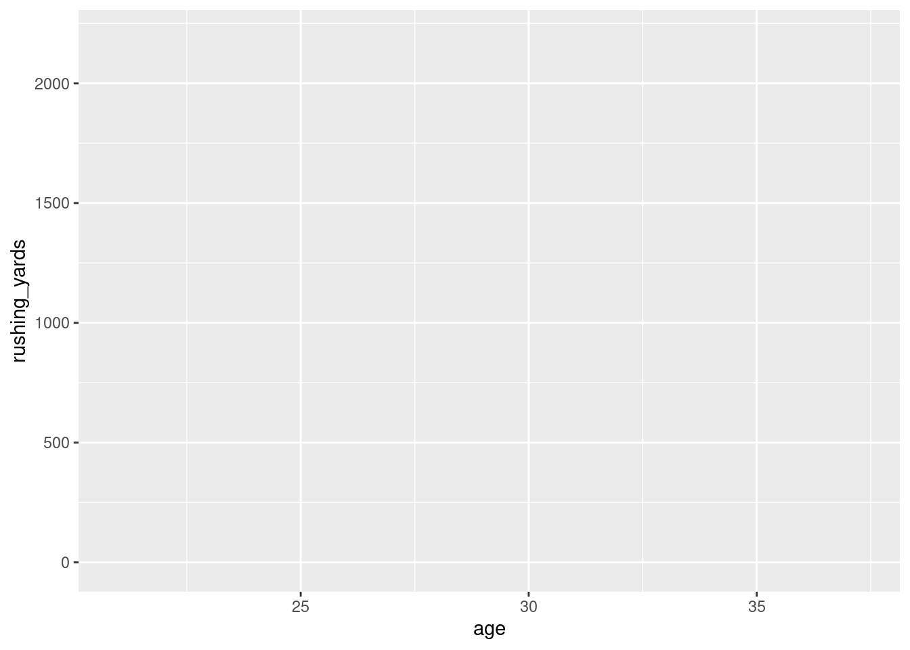
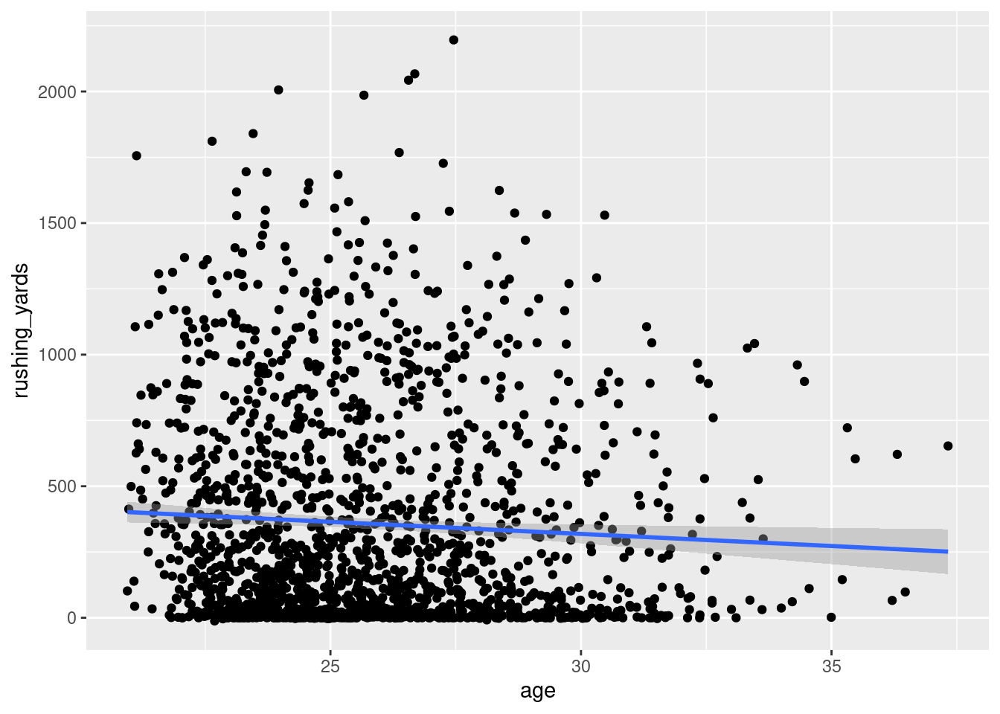
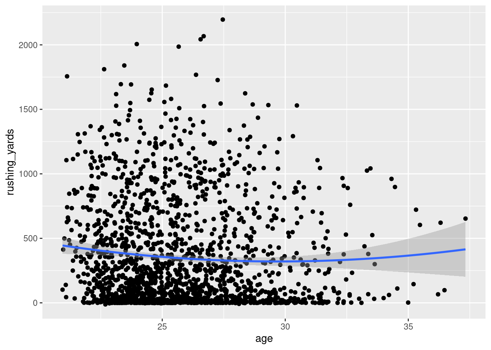
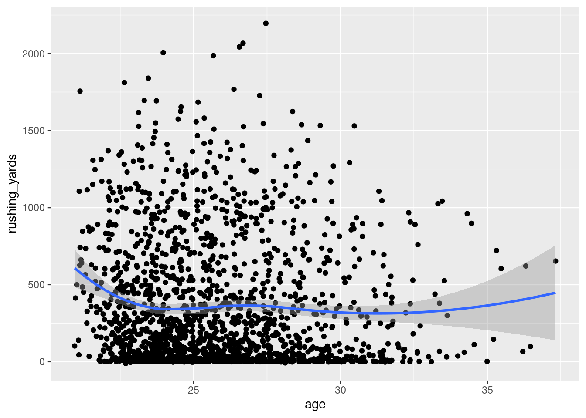
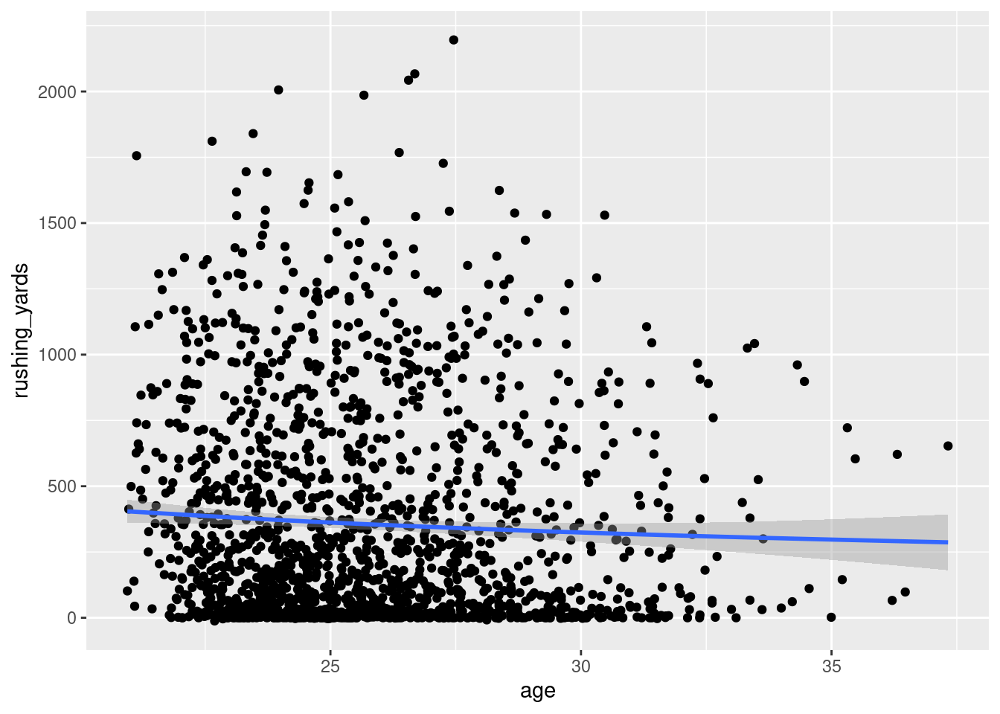
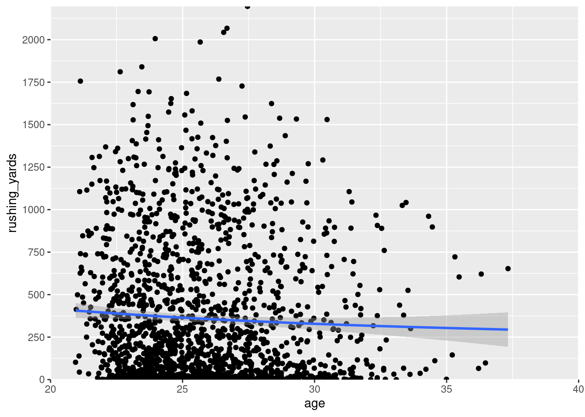
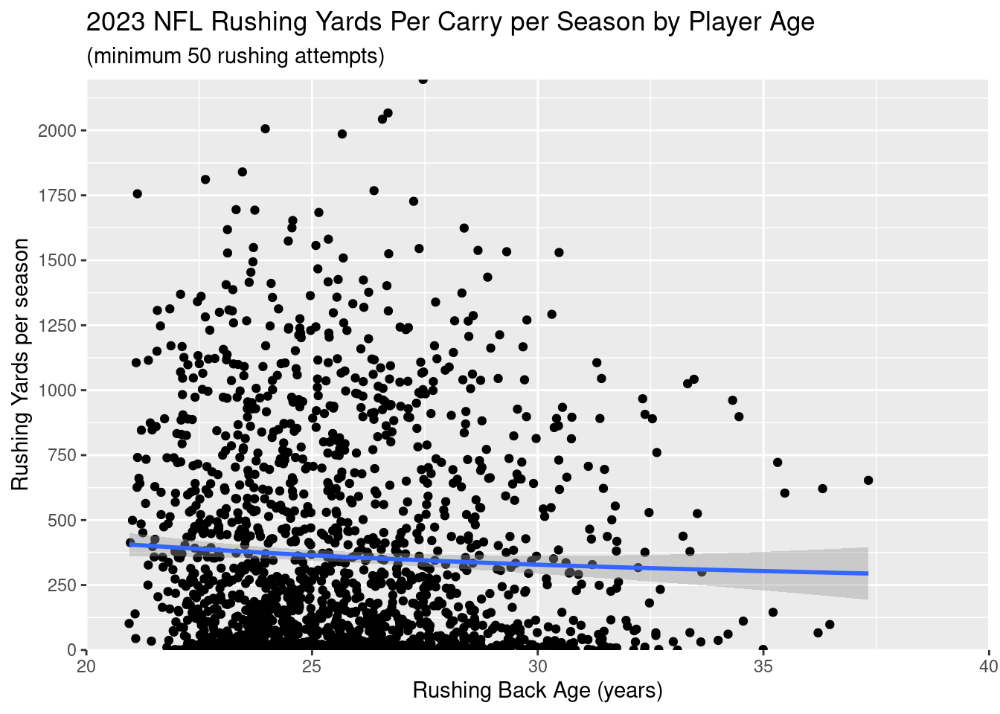
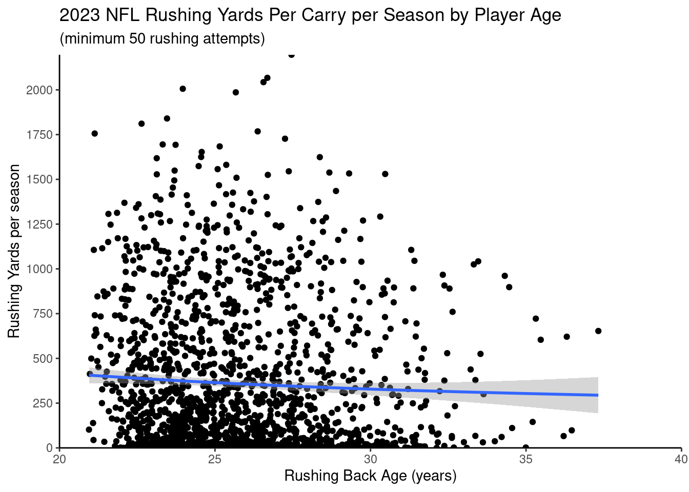
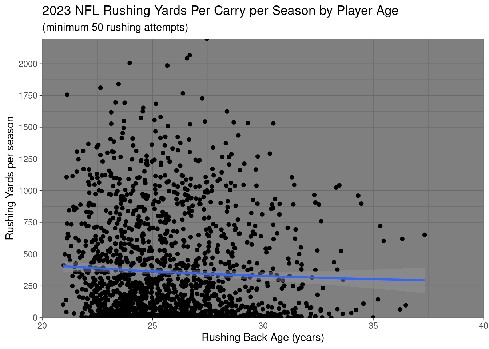

I want your feedback to make the book better for you and other readers. If you find typos, errors, or places where the text may be improved, please let me know. The best ways to provide feedback are by GitHub or hypothes.is annotations.
Opening an issue or submitting a pull request on GitHub: https://github.com/isaactpetersen/Fantasy-Football-Analytics-Textbook
Adding an annotation using hypothes.is.
To add an annotation, select some text and then click the
symbol on the pop-up menu.
To see the annotations of others, click the
symbol in the upper right-hand corner of the page.
4 Data Visualization
4.1 Getting Started
4.1.1 Load Packages
4.1.2 Load Data
We created the player_stats_weekly.RData and player_stats_seasonal.RData objects in Section 3.21.3.
4.2 Scatterplot
First, we prepare the data:
Second, we create the base plot using the ggplot() function of the ggplot2 package. We specify the data object and the variables in the data object that are associated with the x- and y-axes:
Code

Third, we create a scatterplot using the geom_point() function from the ggplot2 package:
Code

Fourth, we add a linear best-fit line using the geom_smooth():
Code

We could also estimate a quadratic polynomial best-fit line:
Code

Or, we could estimate a smooth best-fit (LOESS) line to allow for any form of nonlinearity:
Code

By default, the best-fit line is based on a generalized additive model, which allows for nonlinearity:
Code

Then, we can change the axes:
Code
ggplot2::ggplot(
data = rb_seasonal,
aes(
x = age,
y = rushing_yards)) +
geom_point() +
geom_smooth() +
scale_x_continuous(
expand = c(0,0), # set origin of x-axis to 0
lim = c(20,40), # set limits of x-axis
breaks = seq(from = 20, to = 40, by = 5) # specify x-axis labels
) +
scale_y_continuous(
expand = c(0,0), # set origin of y-axis to 0
lim = c(0,NA), # set limits of y-axis
breaks = seq(from = 0, to = 2500, by = 250) # specify y-axis labels
)
Then, we can add plot labels:
Code
ggplot2::ggplot(
data = rb_seasonal,
aes(
x = age,
y = rushing_yards)) +
geom_point() +
geom_smooth() +
scale_x_continuous(
expand = c(0,0),
lim = c(20,40),
breaks = seq(from = 20, to = 40, by = 5)
) +
scale_y_continuous(
expand = c(0,0),
lim = c(0,NA),
breaks = seq(from = 0, to = 2500, by = 250)
) +
labs( # add plot labels
x = "Rushing Back Age (years)",
y = "Rushing Yards per season",
title = "2023 NFL Rushing Yards Per Carry per Season by Player Age",
subtitle = "(minimum 50 rushing attempts)"
)
Then, we can use a theme such as the classic theme (theme_classic()) to make it more visually presentable:
Code
ggplot2::ggplot(
data = rb_seasonal,
aes(
x = age,
y = rushing_yards)) +
geom_point() +
geom_smooth() +
scale_x_continuous(
expand = c(0,0),
lim = c(20,40),
breaks = seq(from = 20, to = 40, by = 5)
) +
scale_y_continuous(
expand = c(0,0),
lim = c(0,NA),
breaks = seq(from = 0, to = 2500, by = 250)
) +
labs(
x = "Rushing Back Age (years)",
y = "Rushing Yards per season",
title = "2023 NFL Rushing Yards Per Carry per Season by Player Age",
subtitle = "(minimum 50 rushing attempts)"
) +
theme_classic() # use the classic theme
Or, we could use a different theme, such as theme_dark(). For a list of themes available in ggplot2, see here: https://ggplot2-book.org/themes#sec-themes.
Code
ggplot2::ggplot(
data = rb_seasonal,
aes(
x = age,
y = rushing_yards)) +
geom_point() +
geom_smooth() +
scale_x_continuous(
expand = c(0,0),
lim = c(20,40),
breaks = seq(from = 20, to = 40, by = 5)
) +
scale_y_continuous(
expand = c(0,0),
lim = c(0,NA),
breaks = seq(from = 0, to = 2500, by = 250)
) +
labs(
x = "Rushing Back Age (years)",
y = "Rushing Yards per season",
title = "2023 NFL Rushing Yards Per Carry per Season by Player Age",
subtitle = "(minimum 50 rushing attempts)"
) +
theme_dark() # use the dark theme
4.3 Examples
4.3.1 Players
4.3.1.1 Running Back Performance By Player Age
Code
# Prepare Data
rushing_attempts <- nfl_pbp %>%
dplyr::filter(season_type == "REG") %>%
dplyr::filter(
rush == 1,
rush_attempt == 1,
qb_scramble == 0,
qb_dropback == 0,
!is.na(rushing_yards))
rb_yardsPerCarry <- rushing_attempts %>%
dplyr::group_by(rusher_id, season) %>%
dplyr::summarise(
ypc = mean(rushing_yards, na.rm = TRUE),
rush_attempts = n(),
.groups = "drop") %>%
dplyr::ungroup() %>%
dplyr::left_join(
player_stats_seasonal_offense,
by = c("rusher_id" = "player_id", "season")
) %>%
dplyr::filter(
position_group == "RB",
rush_attempts >= 50)4.3.1.1.1 Rushing Yards Per Carry
Code
ggplot2::ggplot(
data = rb_yardsPerCarry,
aes(
x = age,
y = ypc)) +
geom_point() +
geom_smooth() +
labs(
x = "Rushing Back Age (years)",
y = "Rushing Yards per Carry/season",
title = "NFL Rushing Yards Per Carry per Season by Player Age",
subtitle = "(minimum 50 rushing attempts)"
) +
theme_classic()4.3.1.1.2 Rushing EPA Per Season
Code
4.3.2 Teams
4.3.2.1 Defensive and Offensive EPA per Play
Expected points added (EPA) per play by the team with possession.
Code
pbp_regularSeason <- nfl_pbp %>%
dplyr::filter(
season == 2023,
season_type == "REG") %>%
dplyr::filter(!is.na(posteam) & (rush == 1 | pass == 1))
epa_offense <- pbp_regularSeason %>%
dplyr::group_by(team = posteam) %>%
dplyr::summarise(off_epa = mean(epa, na.rm = TRUE))
epa_defense <- pbp_regularSeason %>%
dplyr::group_by(team = defteam) %>%
dplyr::summarise(def_epa = mean(epa, na.rm = TRUE))
epa_combined <- epa_offense %>%
dplyr::inner_join(
epa_defense,
by = "team")
ggplot2::ggplot(
data = epa_combined,
aes(
x = off_epa,
y = def_epa)) +
nflplotR::geom_mean_lines(
aes(
x0 = off_epa ,
y0 = def_epa)) +
nflplotR::geom_nfl_logos(
aes(
team_abbr = team),
width = 0.065,
alpha = 0.7) +
labs(
x = "Offense EPA/play",
y = "Defense EPA/play",
title = "2023 NFL Offensive and Defensive EPA per Play"
) +
theme_classic() +
scale_y_reverse()
4.4 Conclusion
4.5 Session Info
R version 4.4.1 (2024-06-14)
Platform: x86_64-pc-linux-gnu
Running under: Ubuntu 22.04.4 LTS
Matrix products: default
BLAS: /usr/lib/x86_64-linux-gnu/openblas-pthread/libblas.so.3
LAPACK: /usr/lib/x86_64-linux-gnu/openblas-pthread/libopenblasp-r0.3.20.so; LAPACK version 3.10.0
locale:
[1] LC_CTYPE=C.UTF-8 LC_NUMERIC=C LC_TIME=C.UTF-8
[4] LC_COLLATE=C.UTF-8 LC_MONETARY=C.UTF-8 LC_MESSAGES=C.UTF-8
[7] LC_PAPER=C.UTF-8 LC_NAME=C LC_ADDRESS=C
[10] LC_TELEPHONE=C LC_MEASUREMENT=C.UTF-8 LC_IDENTIFICATION=C
time zone: UTC
tzcode source: system (glibc)
attached base packages:
[1] stats graphics grDevices utils datasets methods base
other attached packages:
[1] nflplotR_1.3.1 lubridate_1.9.3 forcats_1.0.0 stringr_1.5.1
[5] dplyr_1.1.4 purrr_1.0.2 readr_2.1.5 tidyr_1.3.1
[9] tibble_3.2.1 ggplot2_3.5.1 tidyverse_2.0.0
loaded via a namespace (and not attached):
[1] gt_0.11.0 utf8_1.2.4 generics_0.1.3 xml2_1.3.6
[5] lattice_0.22-6 stringi_1.8.4 hms_1.1.3 digest_0.6.36
[9] magrittr_2.0.3 evaluate_0.24.0 grid_4.4.1 timechange_0.3.0
[13] fastmap_1.2.0 Matrix_1.7-0 jsonlite_1.8.8 mgcv_1.9-1
[17] fansi_1.0.6 scales_1.3.0 cli_3.6.3 rlang_1.1.4
[21] nflreadr_1.4.0 munsell_0.5.1 splines_4.4.1 withr_3.0.0
[25] cachem_1.1.0 yaml_2.3.9 tools_4.4.1 tzdb_0.4.0
[29] memoise_2.0.1 colorspace_2.1-0 vctrs_0.6.5 R6_2.5.1
[33] magick_2.8.4 lifecycle_1.0.4 htmlwidgets_1.6.4 ggpath_1.0.1
[37] pkgconfig_2.0.3 pillar_1.9.0 gtable_0.3.5 Rcpp_1.0.13
[41] glue_1.7.0 data.table_1.15.4 xfun_0.46 tidyselect_1.2.1
[45] knitr_1.48 farver_2.1.2 nlme_3.1-164 htmltools_0.5.8.1
[49] rmarkdown_2.27 labeling_0.4.3 compiler_4.4.1